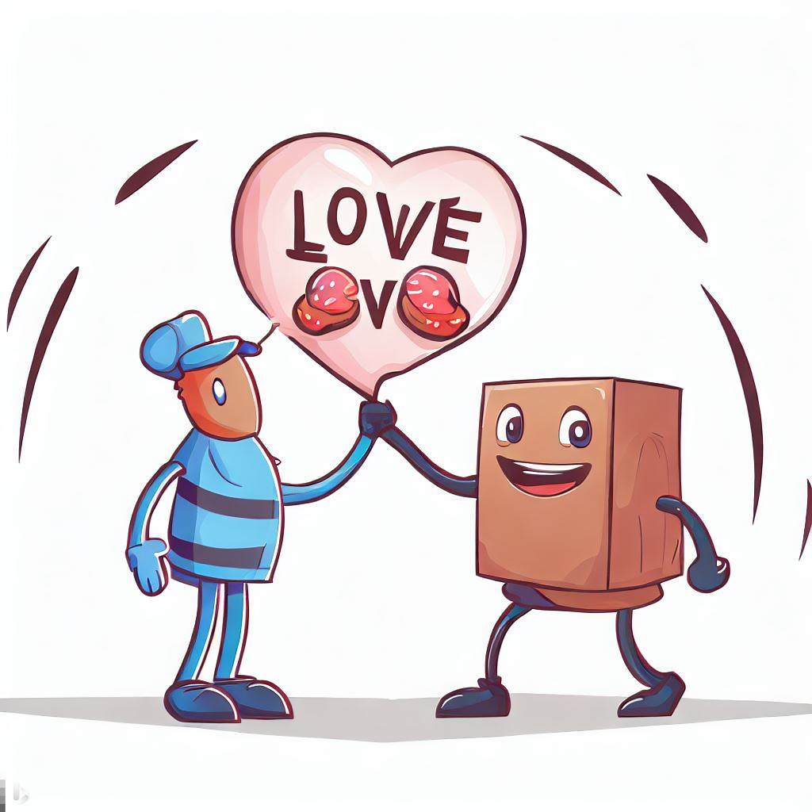
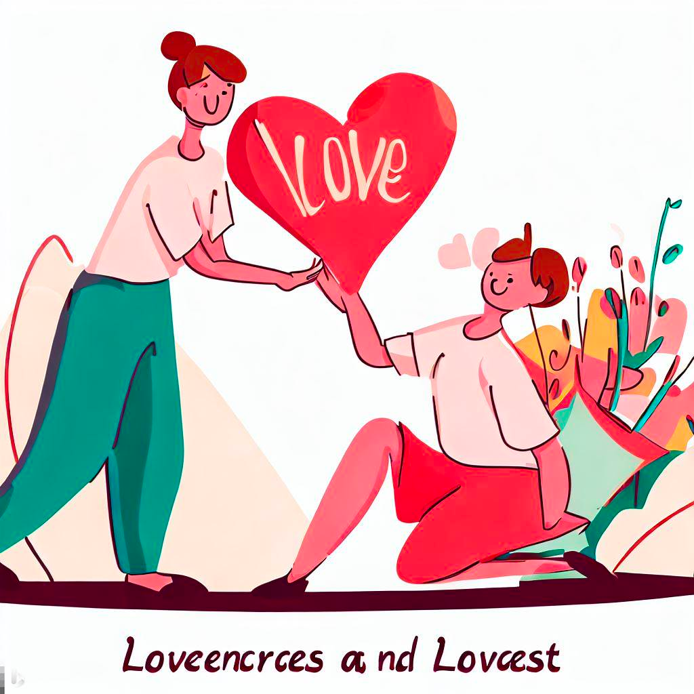
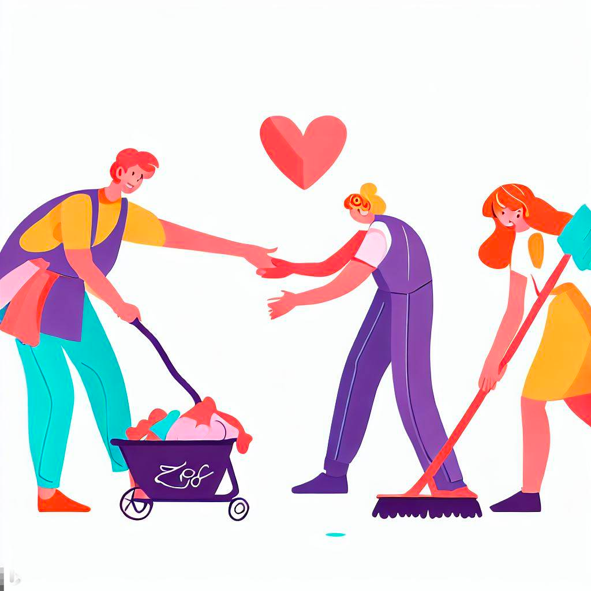

Embracing the Acts of Service Love Language

Among the five love languages identified by Dr. Gary Chapman, 'Acts of Service' is a powerful way of expressing love that often goes unnoticed. This blog post delves into what the Acts of Service love language entails and offers practical advice on how to incorporate it into your relationship, just like we explored the role of 'Words of Affirmation' in a previous article.
What is Acts of Service Love Language?
Acts of Service can be best described as doing something for your partner that you know they would like, such as filling up their car, making a meal, or even taking out the garbage. These actions require thought, time, and effort. For people whose primary love language is Acts of Service, actions speak louder than words.
Why Acts of Service Matter
In a fast-paced world where time is often a scarce resource, performing an act of service becomes a significant indicator of love and care. It's about sacrificing your time to make your partner's life easier and happier. For those who value this love language, a helpful action can be worth more than the most heartfelt words.
How to Speak the Acts of Service Love Language
- Observe and Learn: Pay attention to what your partner often complains about or what tasks they find overwhelming. Is it the weekly grocery shopping, or perhaps keeping up with household chores?
- Take Initiative: Rather than waiting to be asked, take the initiative. Surprise your partner by completing a task for them. It shows that you are attentive to their needs.
- Quality Matters: When performing an act of service, do it with care and quality. The effort put into the task is as important as the task itself.
- Combine with Other Love Languages: Sometimes, combine acts of service with words of affirmation or quality time. For example, cook a meal together and enjoy a conversation while doing it.
- Be Consistent: Regular small acts of service can be more impactful than sporadic grand gestures. Consistency shows your ongoing commitment to the relationship.
Examples of Acts of Service
- Preparing breakfast in bed on a lazy Sunday.
- Taking over some household chores when your partner is busy or tired.
- Running errands for them, especially during stressful periods.
- Helping with a work project or offering support in small business ventures.
Benefits of Acts of Service in a Relationship
- Builds Resilience: When partners regularly help each other out, it builds resilience in the relationship. It creates a sense of teamwork and shared responsibility.
- Increases Appreciation: Regular acts of service make partners feel valued and appreciated. It demonstrates that you are willing to put their needs alongside or even above your own.
- Deepens Emotional Connection: Helping each other in tangible ways can deepen emotional connections, as it shows a level of understanding and care that goes beyond words.
- Promotes Mutual Respect: Acts of service demonstrate a high level of respect for your partner, acknowledging their time and effort in other areas.
Navigating Challenges
While Acts of Service can be a wonderful expression of love, they come with their challenges. Over-dependence on acts of service can lead to feelings of resentment or being taken for granted. It’s crucial to maintain balance and ensure that both partners feel their needs are being met.
How to Ask for Acts of Service
If Acts of Service is your primary love language but not your partner's, communication is key. Express your desires in a non-demanding way. Explain how these actions make you feel loved and appreciated.
Conclusion
Embracing the Acts of Service love language is about the selfless giving of oneself to make life easier and more joyful for your partner. Whether it’s through daily chores, thoughtful gestures, or being there in times of need, these acts of service speak volumes in a relationship. Remember, in the end, it's the thought and effort that count, transforming mundane tasks into profound expressions of love.